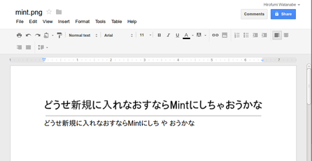

〜2012年4月下旬〜
[CSS]画像置換「-9999px」のパフォーマンスを改善した新しいテクニックというのをへぇとか思いながら読んでて、
そういえばこの日記はどうだっけと確認してみると案の定-9999px技を使っていた。
パフォーマンス的によくないということなので早速切り替えた。
HDDからなのかよくわからないが、ちょっと放っておけない音がするので分解してみた。
開けたまま電源ONしたらファンからの音だった。ほこりがたまってそこから音が出てたんだな。
HDDからじゃなくてよかった。
G-GUIDEとか使えなくなったけど、RD-H1はブラウザやメールで番組予約できるからまだまだ現役。
遊んでるシャープのレコーダーを活用しはじめた。
番組表はだめだめだが、Gコードは生きていた。
新聞の番組欄からいつのまにか消えていたが、
ぐぐってみたら
Yahoo!テレビ.Gガイド [テレビ番組表]にあった。
早速入力してみるとチャンネルが空になってる以外は機能しているようだ。
19:57-20:54が19:57-20:57になってるとかあるが、
おそらく数字の桁数が短かくなるようにわざとやってるんだと思われる。
Gコードなつかしいな。もう使うこともないと思うが。
twitterで勝手にURL扱いされる文字列に何かprefixつけたら抑制されるかどうかを実験してみた。
記号しかないだろうということで記号だけで試す。
迷惑にならないようにダイレクトメッセージを自分自身に送った。
結論としては/.!$-='"あたりをつければ変換されない。
/goolge.com .google.com !google.com $google.com -google.com =google.com "google.com 'google.com
ということは"google.com"とか'google.com'のようにして使うとさりげないかもしれない。
set-option -g set-titles onすればいいとわかったが、
デフォルトで出てくる情報がごちゃごちゃしすぎなので、
すっきりとさせた。
set-option -g set-titles on set-option -g set-titles-string "#T"
tmuxかどうかはステータスラインでわかるので、こんなもんで困らないかな。
さっきやっと使えるようになった。
なんかいきなりGoogle Docsの内容が出てきて面喰らった。
Google Notebookはここに保存したんだったな、そういえば。
一番知りたかったOCR機能だけど、Japaneseもプルダウンメニューにあった。
というわけでかなり状態のいい文字列だけの画像を作成したのでそれでテスト。
結構ちゃんと認識していて驚いた。まあ条件よすぎではあるけど。

全然気づいてなかったが、18日くらいから通るようになってた。
ってことは
先日のruby-talk MLのミラーの件もなんか時期的に微妙で小細工関係なく通ってるのかも。
アップデートマネージャーで特に問題もなく上がったが、気になる点が。
Alt+Tabでウィンドウの切り替えができない。
別なキーにショートカットキーを割り当てても機能しない。
この時点でそろそろ新規に入れなおそうと思っていたこともあって、
いい機会だとISOファイルをtorrentをダウンロードし始めた。
Ubuntu 12.04のデスクトップ版をインストールしようとしたら途中でハングしてしまう。
Mintもだめ。11.10もだめ。サーバーはいけるが、デスクトップをインストールするとやはりだめ。
mini.isoも結局はだめ。どういうこと？
というわけで11.04のmini.isoを使ってインストールしたらやっといけた。
どうもXがだめっぽい雰囲気。
アップグレードではいけてたので、nvidiaのドライバーもなしにUnity 3Dにしようとしてるとか？
このあたりはよくわからないな。
nvidiaのドライバーをテキストモードでインストールできていれれば何かわかったかもれしれないが。
結局11.10,12.04と順にdo-release-upgradeしてなんとかアップグレード完了。
ってことは今後は新規にインストールできないことになるな。
困ったな。Fedoraに戻すか。
xsaneの動作確認しなきゃと思ったのが22:30で、今月そういえば1冊もスキャンしてないよと気づいた。
てなわけで駆け込みで7冊スキャンした。解体のほうは20冊ぐらい進んでいるんだけど。